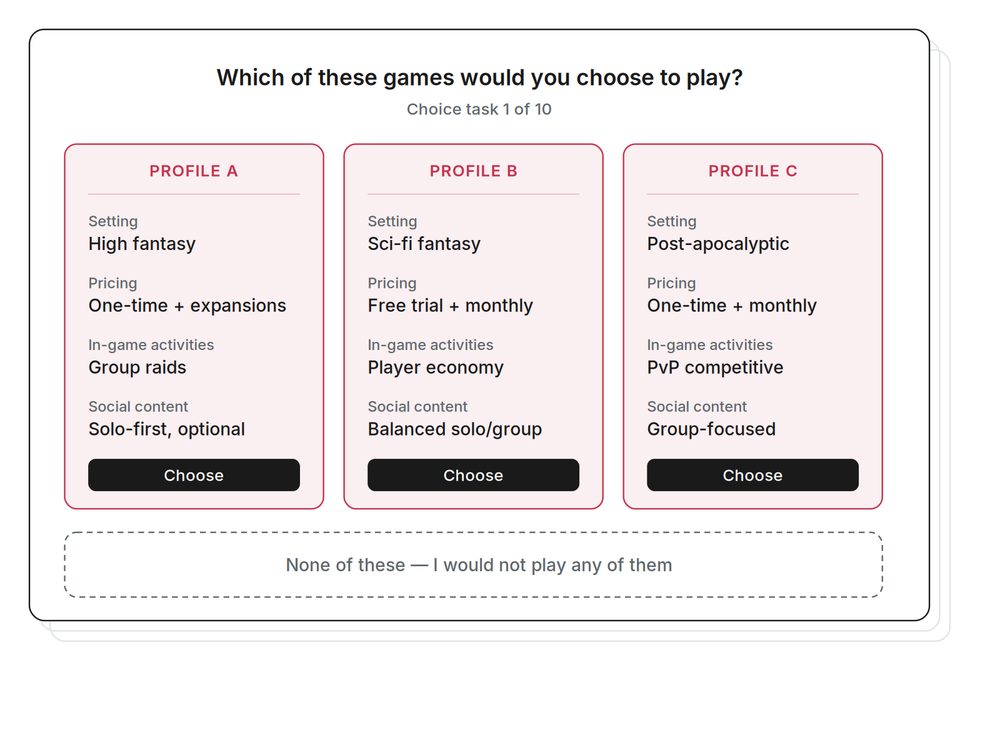

Brand Tracker, an interactive R and Shiny dashboard following the consumer funnel across sportsbooks and prediction markets. Click to enlarge.

An example conjoint choice task from the RPG concept test survey design. Click to enlarge.
Hi, I'm Kai! With experience spanning market research, user experience, and pricing, I'm passionate about turning ambiguous, challenging business problems into narrative-driven insights. Leveraging quantitative and qualitative findings, I surface findings that inform product design and marketing strategy.
I'm currently a Quantitative Market Researcher at Conjointly, where I leverage advanced survey methods like conjoint analysis, MaxDiff, and implicit testing to enable evidence-based decision-making for clients across industries.
Though skilled in survey design, statistical analysis, and data visualization, I have an equal affinity for the qualitative "why," contextualizing quant analyses and interactive dashboards with real consumer and user feedback.
My foundation is in behavioral science: I graduated from UC Santa Barbara in 2024 with a major in Psychological and Brain Sciences and a minor in Applied Psychology.
Brand Tracker, an interactive R and Shiny dashboard following the consumer funnel across sportsbooks and prediction markets. Click to enlarge.

An example conjoint choice task from the RPG concept test survey design. Click to enlarge.
Designed and delivered a practitioner webinar that took business audiences from conjoint theory to a real study, analyzed live.
Built an interactive R Shiny dashboard tracking brand health and search interest across sportsbooks, event contracts, and prediction markets as Kalshi and Polymarket surged.
Designed a full quantitative concept test for a new RPG title, from the sample plan and survey flow to a conjoint analysis covering setting, pricing, and social content.
Have a role, a research problem, or a question worth digging into? I'd love to hear from you. Based in Irvine, CA.